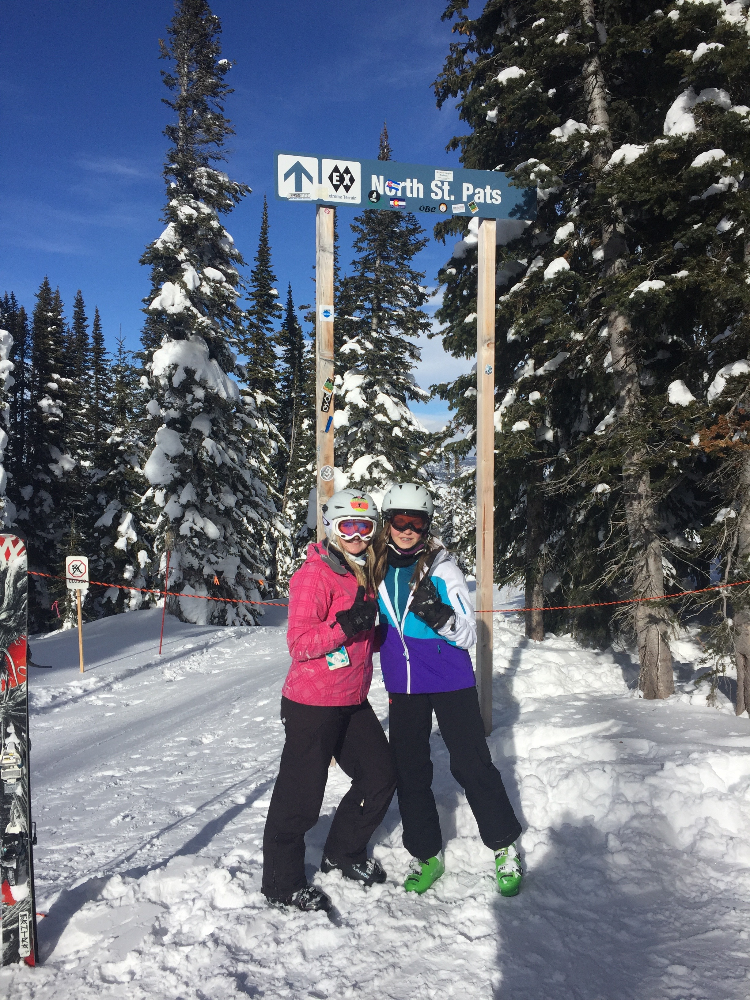

Skiing every winter with my family
Running
Binge watching Netflix
Eating mac & cheese
Sleeping
Watching Riverdale every Wednesday
Wasting my money on pointless things
Crying outside of Grainger after CS quizzes
My name is Gillian Connolly. I am currently studying Mathematics and Computer Science at the University of Illinois. Last May, I graduated from Lemont Hight School. Some of the activities I did in high school include running for my school's cross country team, leading my National English Honor Society as Vice President, and promoting Girls in STEM at my local middle school. One of the biggest accomplishments was when I ran a triathlon two Summers ago. It took so much time and effort but I was able to achieve my goal. It was after this I realized that anything is possible if you try your hardest- even passing CS 125. Something that I really enjoy doing in my free time is travelling with my family. This past Summer I went to New Orleans and Hawaii. I love visiting new places and seeing all of the many beauties the world has to offer. In the near future I hope to gain more knowledge about coding, (possibly) run a half marathon, travel around the world, and get a job after I graduate(fingers crossed on the last one).